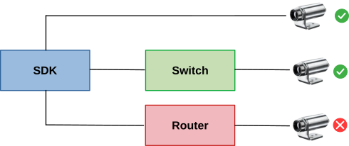

|
Thermal Camera SDK 11.3.0
SDK for Optris Thermal Cameras
|
|
Thermal Camera SDK 11.3.0
SDK for Optris Thermal Cameras
|
The EnumerationManager can detect available devices on local USB ports and on the network. It fetches their connection details and some basic information about the device like its serial number, its firmware and hardware revisions.
Devices connected via USB can be detected out of the box. Ethernet devices, on the other hand, need to run at least the following firmware revisions or the SDK will not be able to locate them on the network:
| Device Type | Minimal Required Firmware Revision |
|---|---|
| Xi 80 | 3031 |
| Xi 320 MT | 3351 |
| Xi 410 | 3824 |
| Xi 1M | 4020 |
Please use the PixConnect 3 to verify the firmware revision of your device and update it as needed. The SDK itself does not yet support firmware updates.
The manager is implemented as a Singleton so that its unique instance can be accessed application wide via the static getInstance() method.
The EnumerationManager is initialized in the Sdk::init() function. It adds an EnumerationDetector for USB devices and starts its detection loop in a dedicated thread (runAsync()). You can stop this loop at any time by calling stopRunning(). Use either run() or runAsync() to restart it. The first version runs the detection loop synchronously and will block while the second one runs the loop asynchronously in a separate thread.
You can add and remove detectors for USB and Ethernet devices at any time with the help of the following methods of the EnumerationManager:
USB
Only one detector for USB devices can be added per program/process.
Ethernet
Only one detector for Ethernet devices can be added per network and per program/process. If you wish to add/remove a detector for the network 192.168.0.0 with the subnet mask 255.255.255.0, you can use the following methods:
/24 is a short hand for the subnet mask 255.255.255.0. The 24 refers to the number of bits that have the value 1 in the subnet mask.The methods adding detectors return a string key that uniquely identifies the added detector instances. If this string is empty, adding the detector failed for one of the following reasons:
The EnumerationManager offers some additional methods to handle the device detectors:
getDetectorNames() returns the names of all active detectors.removeDetector() removes the detector with the given name.clearDetectors() removes all detectors.There are two ways to extract information about detected devices from the EnumerationManager:
getDetectedDevices() to get DeviceInfo objects for all currently detected devices.EnumerationClient and register an instance as an observer with the EnumerationManager via the addClient() method. Then the manager will notify it about newly detected devices, lost devices and devices whose connection details or status have changed.SDK clients can receive updates on the detection status of devices through the callbacks defined in the EnumerationClient class. The EnumerationClient is implemented as an observer of the EnumerationManager. To use it derive your own class from the EnumerationClient, implement the callback methods you are interested in and register an instance of that class with the EnumerationManager by calling addClient().
EnumerationClient instance from the EnumerationManager with removeClient() before destroying it. Otherwise you may provoke a segmentation fault.The EnumerationClient features three callback methods:
onDeviceDetected() - a new device was detected.onDeviceDetectionLost() - the detection of a device was lost. onDeviceDetectionChanged() - one or more details in the DeviceInfo instance representing a detected device have changed. The detectors pursue different strategies to find devices depending on the used connection interface (USB, Ethernet).
When connecting to a USB device the SDK places a system wide exclusive lock on the device file. This ensures that an actively used device can not be used by another process. During a detection the SDK enumerates over all connected USB devices and identifies Optris cameras by their vendor and product ID. If an Optris camera was found it probes the file lock on its device file to determine whether the camera is already in use.
The SDK uses UDP broadcasts to find Ethernet devices on a network. If an Optris camera receives such a broadcast, it will send an UDP package with its on-board network configuration and some additional status information back to the initiator of the broadcast. The SDK packages the received data into a DeviceInfo instance and potentially relays it to the client through the EnumerationClient callbacks.

The SDK uses a set of special lock files to synchronize the device usage across a machine. These files reside in an otcsdk/ sub-folder of the temp directory on your machine. Their file names identify the device connection by the device serial number and the connection interface:
They serve two main purposes:
IRImagers on this machine have an active connection to ensure that devices only has one active connection at a time.Once the connection details to a device are established the SDK tries to create/open the corresponding lock file and tries to exclusively lock it. If that fails the desired device connection is already established by another IRImager on this machine and this new attempt will fail.
Upon disconnecting the SDK releases the exclusive lock but leaves the lock file. This enables other IRImager to claim it and read its contents. When the process that last used the device shuts down gracefully the corresponding lock file is deleted.